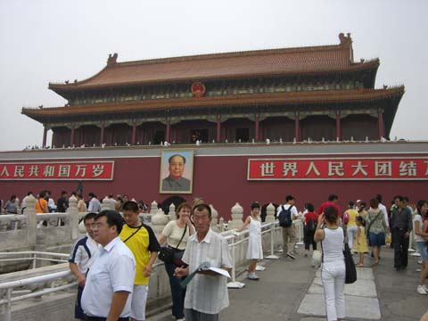
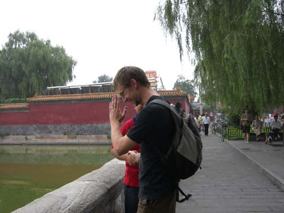
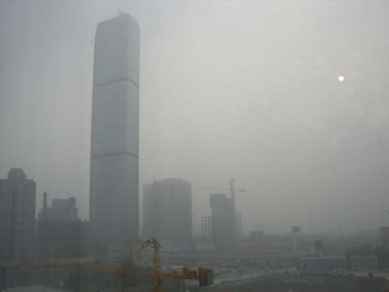
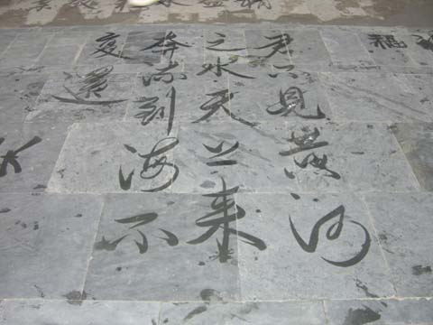
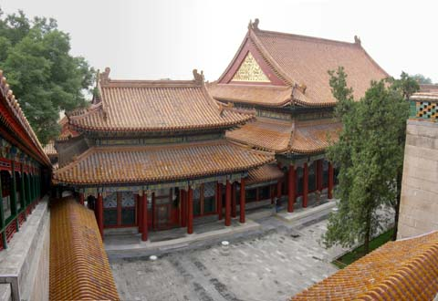
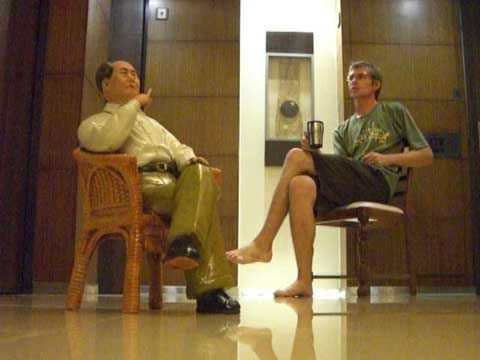
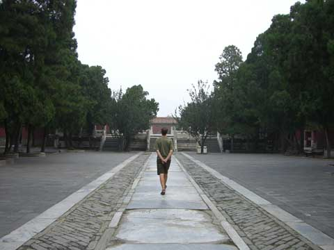

china
beijing

here we are at tiananmen square. and this is when it's tourist low season... i'd hate to be here when it's busy

strange things happen in asia. like people who want a photo taken with a western stranger... here's mr red shirt thanking me for being in his holiday snap.
the six official mascots for the beijing olympics are, from left to right, bluechan, pandalike, rensan, haironfierto, evileyesorangji and greenda.

ahhhh, fresh chinese air! this is how smoggy it was the entire time we were there. and yes, that weird orange mark on the right is the sun. doctors advise against running for half the year in beijing since the smog you inhale is worse than the benefit of the exercise. joy!

a few temples has these old guys walking around doing caligraphy on the ground in water

one of the many grounds in one of the many emperor's palaces

mao's not frozen! here i am debating with him the benefits of capitalism
great wall
we got our driver harry to take us out for the day to the less touristy area of mutianyu a few hours out of beijing..

on the way home we stopped at the enormous grounds of the ming tombs